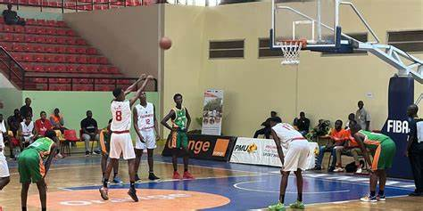

Bienvenue sur la page d'actualité de l'université Gamal Abdel Nasser de Conakry.
Du progrès à la Faculté des Sciences et Techniques de la Santé
Le Centre Hospitalier Universitaire de Donka et l’Université Gamal Abdel Nasser de Conakry (UGANC) ont signé, le mardi 30 janvier 2024, une convention portant sur l’encadrement des stagiaires.
Cette collaboration renforce la mission du CHU Donka axée sur la formation, les soins spécialisés et la recherche. Elle améliore les conditions de stage pour les étudiants de la Faculté des Sciences et Techniques de la Santé de l’UGANC, qu’ils soient en formation initiale, en thèse ou en spécialisation.
Ces opportunités pratiques leur offriront une expérience enrichissante dans un environnement médical dynamique. De plus, cette convention garantit un encadrement rigoureux et un suivi personnalisé de leur progression académique et professionnelle.
La bibliothèque
Une bibliothèque agréable, bien organisée et très accueillante. Le personnel est toujours disponible pour conseiller et répondre aux questions. Le choix de livres est vaste, avec régulièrement des nouveautés et des expositions thématiques intéressantes. Un véritable lieu de culture, de calme et de découverte. Mention spéciale pour l’espace de travail, parfait pour réviser ou lire en toute tranquillité !

Tournoi inter-universitaires de l’amitié (Basketball) de la Guinée : L'université Gamal Abdel Nasser De Conakry réussit son entrée
L'équipe de basketball de l'UGANC a réussi son entrée en compétition du tournoi inter-universitaires de l’amitié qui se joue à Kindia. L'UGNAC à sévèrement battu L'équipe de l'université de Sonfonia (89-67) ce lundi au stade de Kindia. Une belle performance de l’équipe de l'UGANC masculine qui aura à cœur de remettre cela lors de la compétition intrnationale. Ce sera au compte de la 2e journée. À noter que cette compétition de jeunes se joue dans les deux séries Dames et messieurs.
Cantine de l'université
Les cantines universitaires, souvent perçues comme de simple lieux de restauration, jouent en réalité un rôle multifacette et essentiel dans la vie étudiante.
Au-delà de l'aspect purement nutritif, elles sont des épicentres sociaux, des espaces de detente et parfois même des laboratoires d'experiences culinaires pour les étudiants.
En somme, la cantine universitaire est bien plus qu'un simple réfectoire.Elle est le témoin des joies et des peines, des réussites et des doutes des amitiés qui se créent et des souvenirs qui se construisent .